AI 기반
기후·대기환경평가:
시공간 정합형 영향평가
- 1숨쉬는 공간의 대기오염 해상도
- 2AMR-HGN 물리유도 잠재공간 융합학습과(Adaptive Multi-Resolution
Heterogeneous Graph Network)FGNO 함수형 생성 신경 연산자(Functional Generative Neural Operator)
- 3AMR-HGN 설계 철학
- 4기후변화 및 환경영향평가 적용
- 5현업화 연구 제안
 (주)건화 환경평가부 정필수 상무
(주)건화 환경평가부 정필수 상무jeong-peelsoo.github.io/
eia-ai-deck
목차
5개 챕터 · 영상 3편
오늘 다섯 가지를 말씀드립니다3편의 영상과 기후변화 및 환경영향평가 적용 그리고 현업화 연구 제안으로 설명합니다
1
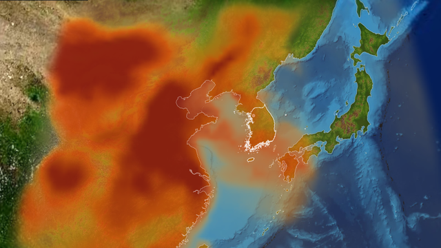
▶
숨쉬는 공간의
대기오염 해상도"왜 이 연구가 필요한가"
국제 연구 흐름과 질병부담, 측정 공백을 짚고 측정하지 않은 공간의 농도를 어떻게 알지 묻는다.
2
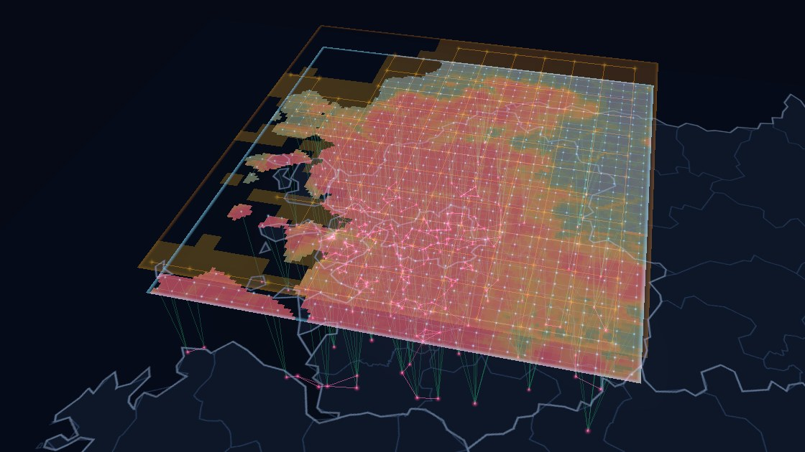
▶
AMR-HGN 물리유도
잠재공간 융합학습과
FGNO 함수형 생성
신경 연산자
공개 자료를 하나의 잠재공간에 융합해 전국 1km 시간별 농도장을 만들고, 화학 법칙으로 검증한다.
3
 ▶
▶
설계 철학"자연을 바라보는 관점으로 설계하다."
설계 철학 다큐와 GraphCast · GenCast 등 다섯 사례로, 대기를 바라보는 관점이 구조를 정함을 본다.
4
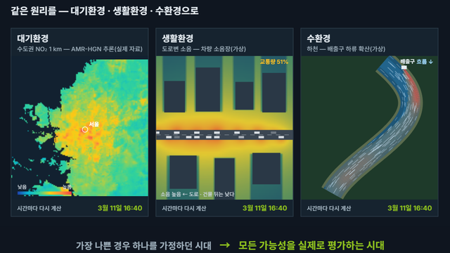
기후변화 및
환경영향평가 적용"12일에서 8,760시간으로"
표본조사를 시공간 정합형 평가로 넘어서고, CMAQ 에뮬레이터와 기후 · 전략 · 사후조사로 넓힌다.
5
연구 제안
현업화 연구 제안기초연구 → 실증연구 →
제도화 → 실무 활용
AMR-HGN 고도화 · FGNO 개발 로드맵과 평가용 AI의 현업화 실증, 성공 요인과 협업을 제안한다.
1
1 / 5
숨쉬는 공간의
대기오염 해상도
왜 이 연구가 필요한가 — 수십 km 격자에서는 도심과 외곽이 같은 값 하나에 묻힌다
1숨쉬는 공간의 대기오염 해상도
국제 흐름 · 대기환경 인공지능
대기환경 인공지능 연구는 예측에서
관측하지 않은 공간의 추론과 인과관계 이해로 넓어지고 있다
1
통계 · 기계학습 예측RF · SVR · LSTM
측정소 한 곳의 PM₂.₅ 를 시간축으로 예측하며, 기존 통계모형보다 나은 성능을 겨룬다.
2
심층 시공간 모델CNN · GNN · Transformer
측정소 사이의 관계와 위성 · 기상 · 토지이용 자료를 함께 배워 광역 농도장을 그린다.
3
물리모델 결합CTM–AI 하이브리드 · 물리제약 학습
화학수송모델의 편향을 고치고, 위성을 지상 농도로 바꾸고, 고해상도 장을 복원한다.
4
첨단 연구 방향Neural Operator · Foundation Model · Causal AI
해상도에 묶이지 않는 연산자 학습, 범용 표현, 배출원 역추정과 인과 규명으로 나아간다.
논문 수는 2017년 이후 급증했다 — Guo et al. (2022) · Li et al. (2023)
네 물결은 문헌 종합에 따른 정성 구분이다
2024–2026 리뷰가 공통으로 짚는 네 가지 전환
미래 예보시공간 농도장 복원순수 데이터 기반물리 유도 인공지능단일 과제다중 과제 · 기반 모델농도 예측과학적 이해 · 의사결정
대기오염 인공지능 논문 수 상위 10개국
Web of Science 1,835건 · 2021년 10월까지
- 1중국524
- 2미국455
- 3잉글랜드136
- 4인도136
- 5대한민국109
- 6이탈리아89
- 7독일78
- 8대만73
- 9스페인71
- 10호주68
Guo et al. (2022) Front. Public Health 10:933665, Table 1 · 2026년 누적 순위는 아니다
1숨쉬는 공간의 대기오염 해상도
연구 지형 · 이 연구의 자리
이 연구는 관측이 희소한 공간의 고해상도 농도 추론에 선다
관측 · 추론A
1관측자료 품질관리
2시공간 농도장 복원
3위성 기반 지상농도 추론
예측B
4미래 대기질 예보
5고농도 사건 · 극값 예측
물리 · 화학 모델D
8CTM 편향보정
9관측 · 모델 융합
10CTM 에뮬레이션
11배출량 역추정
12오염원 · 화학과정 규명
활용 · 차세대E
13노출 · 영향 평가
14배출저감 · 정책 최적화
15기반 모델
이 연구의 핵심 과제이 연구가 함께 맡는 과제
15개 과제 = 2024–2026 리뷰 여러 편을 연구 목적으로 다시 묶은 분류
참고문헌과제 분류Wang et al. (2026) npj Clim. Atmos. Sci. · Dai et al. (2026) Atmos. Environ. X 29, 100435
Garcia et al. (2025) Artif. Intell. Rev. 58(9), 275 · Choi et al. (2025) 한국대기환경학회지 41(2), 179–198
Holzinger et al. (2026) Artif. Intell. Rev. 이 연구정필수 외 (2026) 한국대기환경학회지 42(2), 342–368
희소한 측정소와 불완전한 CTM 배경장에서 측정소 밖 1 km 농도장을 얼마나 정확하고 물리적으로 타당하게 추론하는가
- 2
관측희소공간 농도장측정소 사이의 빈 공간을 전국 1 km · 8,760시간으로 채운다
- 6 · 7
공간해상도5 km 광역 · 1 km 격자 · 측정소 세 층을 잇는다
- 9
관측 · 모델 융합재분석 · 배출 · 측정소의 이종 · 다해상도 자료를 한 잠재공간에 모은다
- 10
CTM 에뮬레이터공개 자료만으로 CMAQ 배경장을 수 분 안에 재현한다
- 13
노출 · 영향 평가후속 현업화 연구 대상같은 위치 · 같은 시각에서 환경영향을 합친다 — 4 · 5절
1숨쉬는 공간의 대기오염 해상도
예측 성능에서 과학적 이해로
평가의 축이 예측 성능에서 과학적 이해로 옮겨 가고 있다
R² · RMSE 개선측정소에서 맞혔는가
물리 · 화학적 타당성대기 지식과 맞는가
독립 검증쓰지 않은 관측 · 실험 · 수치모델로
불확실성어디서 얼마나 믿을 수 있는가
과정 이해배출 · 기상 영향 분리, 오염원 기여
"통계적 연관만으로는 물리 · 화학 메커니즘이 입증되지 않는다."Wang et al. (2026) npj Clim. Atmos. Sci. — 초록 요지
한국대기환경학회지 42(2) · 2026
그래프 기반 1 km 추론장의 화학 정합성 평가
예측 성능을 더 높이는 대신, 그래프 신경망이 추론한 1 km NO₂–O₃ 장이 측정소 밖에서도 대기화학 법칙(산화제 분배, 주말 효과, 위성 FNR)과 맞는지 평가했다.
정필수 외 (2026) 그래프 신경망 기반 고해상도 NO₂–O₃ 추론장의 화학 정합성 평가
첨단 연구 방향 · Neural Operator
본 연구 H-GNN과 첨단 FNO 아키텍처 적용
격자가 아니라 장(함수)을 배우는 연산자 학습이다. 흩어진 측정소에서 연속 장을 거쳐 임의 좌표의 농도를 낸다. 2절에서 다룬다.
개발 중 · 학습된 연산자의 물리 일관성은 열린 문제다 — Holzinger et al. (2026)
1숨쉬는 공간의 대기오염 해상도
고해상도 대기오염 농도장
전지구 모델이 구별하지 못하는 것
전지구 화학수송모델은 동아시아의 대기 현상을 잘 표현한다.
그러나 해상도가 수십 킬로미터여서, 서울 도심과 경기 외곽의 전원 지역을
같은 값 하나로 덮는다.
그 차이를 가려내려는 것이
고해상도 대기질 연구이고, 최근에는 인공지능으로 1km 농도장을 추론한다.
01
전지구 화학수송모델종관 규모의 수송·생성·소멸을 수십 km 격자로 재현한다
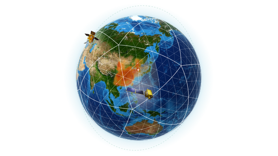
02
계절과 물질겨울·봄·여름, 물질마다 오염이 만들어지는 방식이 다르다

03
1km 해상도같은 값 하나에 묻혀 있던 도시와 전원이 비로소 갈라진다
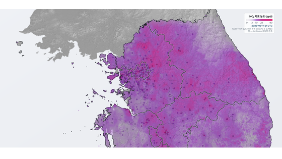
1숨쉬는 공간의 대기오염 해상도
국제 흐름 · 다섯 단계
AI 기반 고해상도 대기질 연구는 다섯 단계로 전개된다
1
Sparse Monitoring
측정망이 도시와 교통축에 집중된다. 산림·산악·도시 외곽이 비어 있다.
2
Multi-Source Fusion
위성·CTM·재분석·배출 인벤토리를 하나의 입력으로 융합한다.
3
High-Resolution Field
1km 격자의 시간별 대기오염 농도장을 산출한다.
4
Decision Support
환경보건·도시정책·SDG 모니터링의 공간정보 기반이 된다.
5
Accountable AI
독립 검증과 한계의 명시로 산출장의 책임성을 확보한다.
고해상도 산출이 소수 집단의 역량에만 머무르면 디지털 전환은 새로운 격차가 된다.
이 다섯
단계가 지향하는 것은 기술 자체도 중요하지만 SDGs 관점에서 누구도 소외되지 않는 환경정보를 생산하는 것이다.
1숨쉬는 공간의 대기오염 해상도
같은 물음, 다른 길
관측 공백을 인공지능으로 추정하는 연구들
Du et al. (2026) — GraPhy
ACM Transactions on Sensor Networks 22(4), 1–23
측정망이 희소한 미국 San Joaquin Valley 의 프레즈노 시에서 물리유도 그래프 신경망으로
PM₂.₅ 를 보간하였다.
SDGs 의의 — 물리지식이 자료 요구량을 낮춰, 측정망이 빈약한
지역도 노출 평가의 대상이 된다.
SDG 3SDG 11
Zhang et al. (2022)
arXiv:2208.14275 (프리프린트)
공개 지리공간자료만으로 중국 동부 318개 도시의 SDG 11.6.2 지표(인구가중
연평균 PM₂.₅)를 20년간 추적하였다.
SDGs 의의 — 공개자료만으로 지표를 산출해, 도시 단위 모니터링
자체를 디지털 공공재로 돌린다.
SDG 11.6.2SDG 17
Zhao et al. (2023)
Ecological Indicators 155, 111031
같은 SDG 11.6.2 지표를 전지구·대륙·국가 규모로 확장해 PM₂.₅ 시공간 패턴과
노출 위험을 평가하였다.
SDGs 의의 — 지역별 산출을 하나의 척도로 묶어, 국가 간 격차를
비교할 기준선을 세운다.
SDG 3SDG 11.6.2
하나의 공통점
셋은 지역도 방법도 다르지만, 희소 관측자료·위성·기상·공간 변수를 결합해
미관측 지점을 추정하면서 관측 공백을 자료의 부족이 아니라 환경정보 접근성의 격차로
다룬다. 앞 장의 다섯 단계는 이 물음을 푸는 순서였고, 세 연구는 그 위에서 각자의 구간을 맡았다.
1숨쉬는 공간의 대기오염 해상도
비엔나에서 · 2024 EGU 총회
측정망이 없는 도시, 저가 센서로 대기정보를 만들다
- 1
오염은 커지는데탄자니아 대기오염 민원의 88%가 다르에살람에서 나왔다 (2019–2022)
- 2
측정은 없었다PM 농도는 늘었지만 상시 감시되지 않았다
- 3
센서로 직접 만들었다저가 센서 14대를 5개 구에 세워 도시 최초의 실시간 대기정보를 만들었다
 2024.04 EGU 총회(비엔나) 포스터 세션 · 본인 촬영
2024.04 EGU 총회(비엔나) 포스터 세션 · 본인 촬영
센서가 처음 보여 준 것 — 같은 도시, 다른 공기
지점 유형별 일평균 PM₂.₅ 최고값 (μg/m³, 2021.05–2022.02) · 축 0–100, 매립지는 축을 넘어 끊어 그렸다
출처 — Manyele et al. (2025), Clean Air Journal 35(1) · 포스터 원문 EGU24-295 (2024)
1숨쉬는 공간의 대기오염 해상도
대기오염 질병부담
대기오염 질병부담이 가장 큰 곳은 아시아와 아프리카
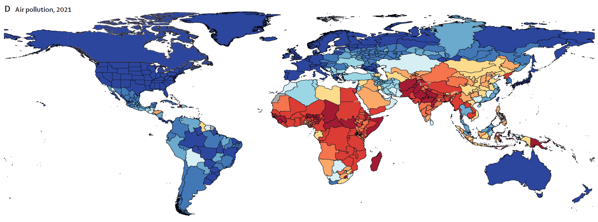
아시아
아프리카
대기오염에 의한 질병부담
질병부담 낮음질병부담 높음

대기오염에 기인한 질병부담 — 인구 10만 명당 위해요인 기여 DALY(장애보정 생존년수)율, 2021년. 붉을수록 부담이 크다.
출처 — GBD 2021 Risk Factors Collaborators, The Lancet 403, 2162–2203 (2024)
1숨쉬는 공간의 대기오염 해상도
불편한 지도
가장 필요한 곳에,
측정소가 없다
- 파란 점은 대기질 측정소다. 북미·유럽·동아시아에는 촘촘하지만
아프리카와 남아시아는 비어 있다.
- 주황 사각형은 아프리카에서 가장 오염된 40개 도시다.
앞 장에서 본 질병부담이
가장 큰 지역과 그대로 겹친다.
- 측정망은 도시와 교통축에 집중되고, 산림·산악·도시 외곽은 정책 판단과
환경보건 연구에서 불확실한 영역으로 남는다.
- 표시한 곳이 가나 아크라다.
측정소가 거의 없는 이 도시로
다음 장에서 간다.
전 세계 대기질 측정망 분포.
출처 — Yadav et al. (2024), Environmental Pollution 342, 122914
1숨쉬는 공간의 대기오염 해상도
가나 아크라 · Yadav et al. (2024)
LA·뉴욕에서 배우고 가나 아크라에 만들다
고해상도 위성영상만으로, 지상 관측이 거의 없는 도시의 연평균 NO₂를
추정한다.
성능을 자랑하는 논문이 아니라 SDGs 실현과 기술의 민주화를 향한 연구였다.
SDGs 대원칙을 대기환경 연구로 옮긴 사례
누구도 소외되지 않는다
측정망 밖에 남겨진 사람들에게도 대기질 정보를 돌려준다.
학습 · 로스앤젤레스연평균 NO₂ 200 m · LUR 정답
낮음높음 · 원 그림 색 막대
비지도 전이학습
적대적 생성형 신경망
추론 · 가나 아크라현지 정답 없이
R² 0.54
출처 — Yadav et al. (2024), Environmental Pollution 342, 122914
1숨쉬는 공간의 대기오염 해상도
한국의 공백
지상 관측이 닿는 격자
0.6%
측정소가 덮는 공간
한반도 육지 107,158개의 1km 격자에 대해 지상 관측 정답은
664개 측정소로 약 0.6%에 불과하다.
관측 희소 문제를 다중 스케일 이종 그래프 신경망으로 풀어,
미관측 지역의 농도를 추론한다.
1숨쉬는 공간의 대기오염 해상도
문제 정의
측정하지 않은 공간의 농도는 어떻게 알 수 있을까?점으로 관측하고, 여러 공간정보로 빈 공간을 추론한다.
 TROPOMI저궤도 · 하루 한 번 13:30 무렵
TROPOMI저궤도 · 하루 한 번 13:30 무렵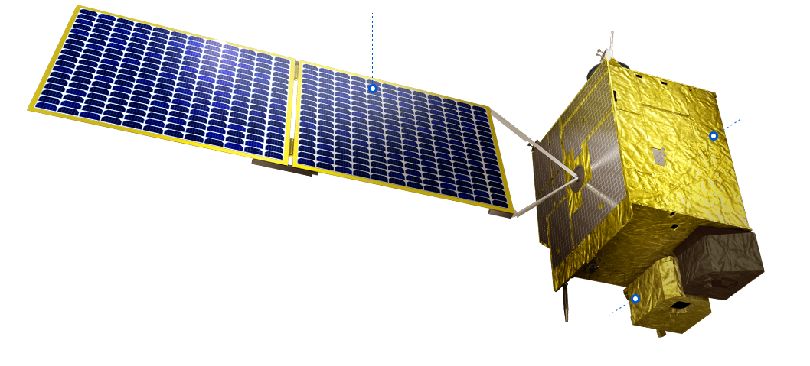
GEMS정지궤도 환경위성 · 자외선·가시광 분광계
이곳에는 측정소가 없습니다.
그렇다면 이 지점의 농도는 얼마일까요?
Local structure.
지형 · 토지피복 · 배출.
Regional context ≠
Local concentration.
광역 대기질과 바람은 넓은 지역의 맥락이다 — 이 1 km 지점의 지상 농도는 아니다.
Column observation ≠
Surface concentration.
위성은 대기 기둥 전체를 본다 — 지상 1 km 농도와 다른 물리량이다.
- 거리보간 → 공간 구조를 놓침.
- 전지구·위성 자료 → 해상도·대표 물리량이 다름.
- 고해상도 CTM → 계산비용이 큼.
각각 유용하지만, 어느 하나도
빈 1 km 격자의 정답은 아니다.
하지만 이 정보들은
서로 관계가 있다.
지형·토지피복배출기상광역 대기질위성 관측측정망
↓관계를 학습↓
측정하지 않은 좌표의 농도
여러 공간정보 →
고해상도 1 km 농도장.
G : {observations, spatial fields,
context} → c(x, y, t)
공간정보를 농도장으로 바꾸는 변환 규칙을 학습한다.
AMR-HGN관계를 연결한다
FGNO장을 변환한다
2
2 / 5
AMR-HGN & FGNO
- AMR-HGN
- Adaptive Multi-Resolution Heterogeneous Graph Network적응형 다중해상도 이종 그래프 신경망
- FGNO
- Functional Generative Neural Operator함수형 생성 신경 연산자
물리유도 잠재공간 융합학습과 함수형 생성 신경 연산자 — 흩어진 공개 자료를 하나의 농도장으로
2AMR-HGN & FGNO
기초 개념 1 · 그래프 신경망
AMR-HGN 의 뼈대 — 그래프 신경망격자가 아니라 점과 선 위에서 배운다 — 흩어진 측정소를 있는 그대로 다룬다
- 그래프 — 노드와 간선측정소 하나가 노드(점), 가까운 측정소끼리 간선(선)으로 잇는다 — 격자처럼 줄 맞출 필요가 없다
- 이종 그래프 — 종류가 다른 노드 · 간선측정소 · 1 km 격자 · 5 km 광역을 한 그래프에 담고, 잇는 관계도 종류별로 따로 둔다
- 메시지 패싱 — 이웃에게 듣고 갱신이웃이 보낸 메시지에 가중치를 붙여 모아 내 상태를 고친다 — 거듭할수록 정보가 멀리 퍼진다
AMR-HGN 은 이렇게
- 노드 3종1 km 격자 · 5 km 광역 · 측정소
- 간선 6종격자–격자 · 측정소–격자 · 측정소–광역 등 관계마다 따로
- 모으기간선 종류마다 따로 배운 어텐션 가중치로 이웃 메시지를 모은다
- 읽기메시지 패싱을 마친 격자 노드에서 1 km 농도를 읽는다
2AMR-HGN & FGNO
기초 개념 2 · 푸리에 신경 연산자
FGNO 의 뼈대 — 장을 물결로 나눠 한꺼번에 바꾼다FFT 로 장을 물결로 바꾸고, 물결마다 배운 가중치를 곱한 뒤 되돌린다
- FFT — 신호를 물결로 나눈다어떤 신호 · 지도도 긴 물결과 짧은 물결의 합이다 — FFT 는 물결마다 세기를 한 번에 계산한다
- 푸리에 층 — 자르고, 곱하고, 되돌린다긴 물결만 남겨 물결마다 가중치를 곱하고, 역FFT 로 장으로 되돌린다
- 학습 — 가중치를 맞춘다출력이 정답에 가까워지도록 가중치를 고친다 — 지도는 가로 · 세로 물결로 똑같이 한다
FGNO 는 이렇게
- 펼치기흩어진 관측을 격자 위 잠재 장으로 옮긴다
- 바꾸기푸리에 층을 거듭해 장 전체를 한 번에 섞는다(전역)
- 보완버린 짧은 물결은 작은 국소 적분으로 채운다(후보 구조)
- 단계개발 단계 — 처리기 구조를 비교하고 있다
2AMR-HGN & FGNO
인터랙티브 시뮬레이션
다중해상도 이종 잠재 정보를
하나의 공간에서 융합한다
AMR-HGN Adaptive Multi-Resolution Heterogeneous Graph Network
FGNO Functional Generative Neural Operator
AMR-HGN은 희소한 측정소, 1km 격자, 5km 광역 —
규모가 다른 세 층을 같은 잠재공간에서 융합해 물질별 농도를 읽어 낸다.
FGNO는 같은 목표를
다른 연산자로 푼다 — 관측을 연속된 장으로 펼쳐 장 전체를 변환한다(개발 단계).
영상은 AMR-HGN 의 E2E 학습과 전국 1km 추론, FGNO 의 가림 학습을
차례로 보여 주고 두 연산자를 나란히 견준다.
영상 속 전문용어 — 쉬운 해설
- 화학수송모델(CTM)오염물질의 이동·반응을 계산하는 수치 모델
- 이종 그래프종류가 다른 점(측정소·격자·광역)을 한 그물망으로 잇는다
- 메시지 패싱이웃한 점끼리 정보를 주고받아 각 점의 값을 갱신한다
- 잠재공간입력을 모델 내부의 숫자 벡터로 옮겨 놓은 추상 공간
- 어텐션어느 이웃을 얼마나 볼지 가중치를 스스로 정하는 장치
- E2E 학습입력에서 최종 농도까지 한 모델이 통째로 학습한다
- 전이학습(순차 전이)먼저 배운 모델을 다음 지역 학습의 출발점으로 쓴다
- 연속 장격자 없이 어느 좌표에서나 값이 정해진 농도 분포
- 신경 연산자장 전체를 받아 장 전체를 내놓도록 배운 신경망
- 파동 모드(푸리에 모드)장을 여러 파장의 물결로 나눠 한꺼번에 변환한다
- 가림 학습(마스킹 학습)측정소 몇 곳을 가리고 남은 관측으로 그 자리를 예측한다
- 연산자관측을 농도장으로 바꾸는 규칙 — 두 모델은 여기서 갈린다
2AMR-HGN & FGNO
공개 자료 파이프라인
복잡한 공개 자료를, 하나의 정갈한 파이프라인으로
투영도 해상도도 형식도 제각각인 공개 자료를 공통 격자로 정합해,
누구나 쓸 수 있는 입력으로 만든다.
값비싼 관측도, 자체 화학수송모델도 필요하지 않다.
복잡한 공개 입력 · 이질적 소스
글로벌 데이터GEOS-CF NO₂ · 5km
정적 지표IGBP 토지피복 · 1km
배출량CAPSS NOx · 1km
측정망AirKorea 671 측정소
정갈한 파이프라인 · 통일된 격자
데이터 정합 · 조화
- 공통 좌표계(TM)로 재투영
- 시공간 정합 · 격자 보간
- 결측 · 이상치 QA
5km 동적 격자
시간에 따라 변하는 자료
기상 재분석 · 전지구 화학수송모델
1km 정적 격자
시간에 따라 변하지 않는 자료
지형(고도·경사) · 토지피복 · 배출 인벤토리
다중 스케일 이종 그래프
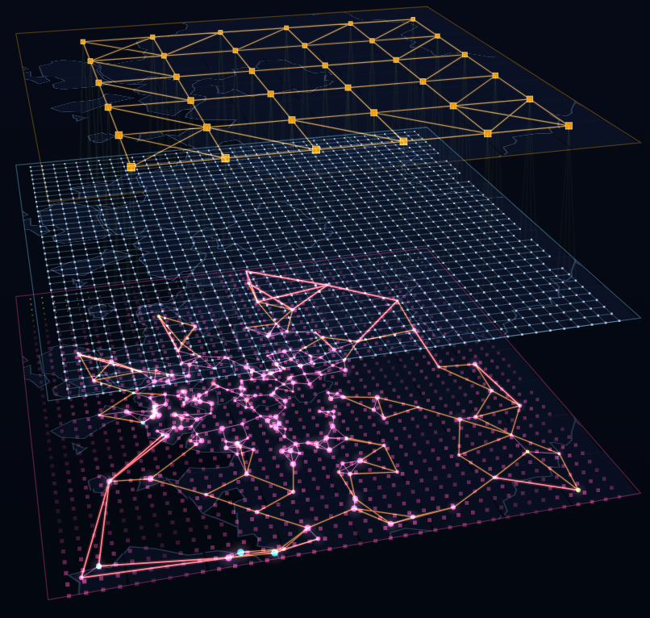
- 배경장 그래프Region 노드 · 광역 배경
- 국지 그래프Grid 노드 · 1km 국지
- 불균질 측정망 그래프Station 노드 · 희소·불균질
2AMR-HGN & FGNO
무엇을 만들었나
공개 자료만으로,
전국 1km 시간별 대기오염 농도장
1km × 8,760h
한 해를 빠짐없이
한반도 전역에서 시간별 농도장을 격자 단위로 산출한다.
0.62%
정답이 있는 격자의 비율
한반도 육지 107,158 격자 중 지상 관측은 664개 측정소뿐 — 나머지 99%를 추론한다.
0.886 / 0.931
R² — NO₂ / O₃
2022년 학습 · 2023년 664개 측정소 시간 독립 검증. 5종 평균 R² 0.884.
5km 입력 · 1km 산출 · 측정소 NO₂ 비교
2AMR-HGN & FGNO
정직해지기 · 통계가 말하지 못하는 99%
측정소 R²가 아니라
화학 법칙으로 검증한다
0.892
NO₂ 결정계수 R²
2023년 시간 독립 검증
0.926
O₃ 결정계수 R²
2023년 시간 독립 검증
서로 다른 오류 구조의 증거가 같은 방향을 가리킬 때 타당성을 말한다
귀납의 통합 consilience of inductions
추론장이 스스로 그린 산화제 분배비 r = NO₂/Ox —
수도권 도심만
전이 구간, 그 밖은 O₃ 우세
독립 관측인 위성 FNR(HCHO/NO₂) — GEMS · TROPOMI
둘 다 수도권에서
낮다(NOx 포화) — 위 r 의 구조와 겹친다
3
3 / 5
AMR-HGN
설계 철학
자연을 바라보는 관점으로 설계하다 — 다른 연구의 관점과 나란히 본다
3설계 철학
다큐멘터리 · 약 4분
자연을 바라보는 관점으로
전통적인 이론 기반 물리모델이 각자 자연을 보는 관점으로 설계되었듯,
데이터 기반 인공지능 모델 또한
대기를 바라보는 관점으로 설계할 수 있다.
AMR-HGN은 대기오염을
여러 규모의 중첩으로 보고, 희소·불균질한 측정망을 이종 그래프로 끌어안는다.
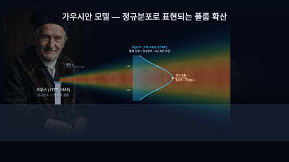
가우시안풍하측 플룸
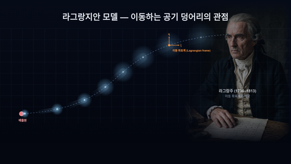
라그랑지안이동 좌표계
 오일러리안삼차원 고정 격자
다중규모 중첩종관·중규모·국지의 중첩
오일러리안삼차원 고정 격자
다중규모 중첩종관·중규모·국지의 중첩
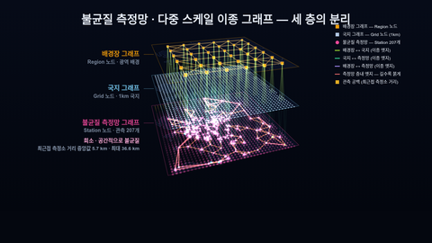
이종 그래프희소·불균질 측정망
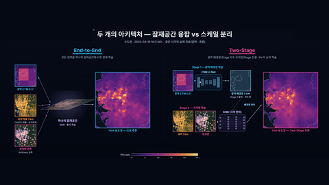
두 아키텍처E2E · Two-Stage
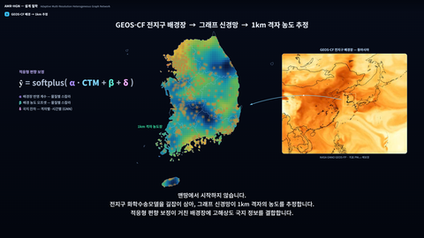
편향 보정전지구 배경장 → 1km
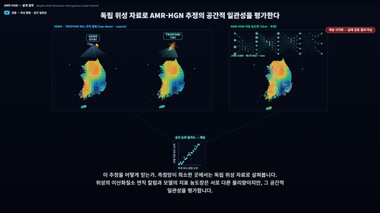
위성 교차검증GEMS · TROPOMI
 AMR-HGN다중 규모 · 이종 그래프
AMR-HGN다중 규모 · 이종 그래프
3설계 철학
대기과학 AI 설계 철학 사례
다른 연구도 대기를 바라보는 관점에서 출발한다빅테크의 대기과학 AI 다섯 사례 — 무엇을 어떻게 보느냐가 모델의 구조를 정했다
GraphCast
"지구는 크고 작은 연결이 겹친 그물"
여러 크기 메쉬의 간선을 한 그래프에 모아 국지와 원거리를 함께 잇는다.
10일 예보를 TPU 1장으로 1분 안에 (IFS 약 1시간)
우리 연구AMR-HGN 다중 규모 그래프
 Research
ResearchAurora
"제각각인 지구 자료도 하나의 표현으로"
해상도 · 층 · 변수가 다른 자료를 공통 3차원 잠재 표현으로 바꾼다.
대기질 예보를 GPU 1장으로 CAMS 보다 약 5만 배 빠르게
우리 연구E2E 잠재공간 융합
 Research
ResearchNeuralGCM
"큰 흐름은 방정식, 작은 과정은 학습"
미분 가능한 역학 코어가 큰 흐름을, 신경망이 작은 규모 물리를 맡는다.
기존 기후모델(GCM)보다 계산 비용이 몇 자릿수 작다
우리 연구AMR-HGN 물리유도 융합
CorrDiff
"규모마다 작동하는 물리가 다르다"
UNet 이 평균을, 확산모델이 잔차를 맡는 두 단계로 25 km 재분석을 2 km 로 내린다.
GPU 1장으로 수치모델 WRF 보다 22배 이상 빠르게
우리 연구Two-Stage 배경 · 잔차 분리
GenCast
"날씨는 하나의 답이 아니라 가능한 범위"
확산모델이 잡음에서 다음 상태를 거듭 다듬어 15일 앙상블을 만든다.
15일 예보 1개를 TPU 1장으로 약 8분
우리 연구FGNO 확률화 (개발 단계)
3설계 철학
사례 1 · GraphCast 다중 메쉬
지구를 크고 작은 그물의 겹침으로 본다
GraphCast
- 쪼갠다정이십면체(노드 12)를 여섯 번 쪼개 노드 40,962개의 메쉬를 만든다
- 겹친다쪼갤 때마다 생긴 간선을 지우지 않고 한 그래프에 모두 남긴다 — 긴 간선과 짧은 간선이 함께 있다
- 전한다같은 16번의 메시지 전달로, 짧은 간선만이면 이웃 몇 칸, 다중 메쉬면 지구 전체에 닿는다
미래 기상은 이렇게 — 6시간씩 굴려 10일
- 넣는다지금과 6시간 전, 두 시점의 전지구 기상(0.25° 격자)
- 한 걸음6시간 뒤의 기상을 내놓는다
- 굴린다그 예측을 다시 넣기를 40번 — 10일 예보가 된다
- 배운 자료ERA5 1979–2017년(39년) 학습 · 2018년 이후 평가
AMR-HGN 은 같은 생각을 한반도에서5 km 광역 · 1 km 격자 · 측정소를 한 이종 그래프로 묶어 광역과 국지를 함께 전한다
정이십면체노드 12
짧은 간선만도달 0%
다중 메쉬도달 0%
메시지 전달 0 / 16회
3설계 철학
사례 2 · GenCast 확산 앙상블
날씨를 가능한 미래들의 분포로 본다이미지 생성 AI와 같은 확산모델로, 가능한 미래 날씨를 여러 개 생성한다
GenCast
- 잡음에서 출발한다직전 두 상태를 조건으로, 순수한 잡음을 거듭 다듬어 12시간 뒤 상태를 만든다
- 한 걸음씩 잇는다12시간 걸음을 30번 이어 15일 예보가 된다
- 여러 번 뽑는다잡음을 바꿔 뽑을 때마다 다른 미래가 나온다 — 갈라지는 폭이 불확실성이다
그래서 예측은 — 하나의 답이 아니라 확률이 된다
- 겹치는 곳여러 미래가 함께 그리는 흐름은 믿을 만한 예측이다
- 퍼지는 폭갈라지는 만큼이 불확실성이다 — 멀리 볼수록 넓어진다
- 세어 본다50개 중 10개가 태풍 상륙을 그리면 상륙 확률 20%(예) — 경보 · 대비를 확률로 판단한다
FGNO 확률화 (개발 단계)하나의 지도 대신 공간적으로 일관된 여러 농도장 — 같은 질문을 대기질에서 푼다
4
4 / 5
기후변화 및
환경영향평가 적용
12일에서 8,760시간으로 — 같은 위치 · 같은 시각에서 영향을 합친다
4기후변화 및 환경영향평가 적용
표본조사의 한계 · 표집분포와 표본오차
12일 평균은
연평균에서 크게 벗어날 수 있다
현황조사 표본오차 계산계절마다 3일씩, 한 해 12일의 측정으로 1년을 대신한다 (조사 시나리오 가정)
SE = s√n
s — 일평균의 표준편차 · n — 측정일 수(12일)
독립 표본이라면 12일 평균이 연평균에서 벗어나는 크기
| 일평균 s | 공식 SE | 실제 흔들림1만 번 · 90% 범위 | 상위 2% 미달12일 최고값 |
|---|
실제는 공식보다 넓다 — 연속한 3일은 서로 닮아(자기상관) 12일 평균의 실제 표준편차가 공식의 다(전국 625개 측정소 중앙값 1.27배).
시간별 1 km 농도장은 대기질 측정을 단순히 대체하는 것이 아니라, 12일 표본의 통계적 결함을 메우고 보완하는 방식이다.
2023 에어코리아 확정자료 · 서울 종로구 도시대기 일평균 · 전국 PM₂.₅ 중앙값 −33 ~ +42%
1만 번 뽑아 보기 — 12일 평균은 얼마나 흔들리나2023 서울 종로구 도시대기 PM₂.₅ 일평균 · 계절마다 연속 3일 한 블록씩 무작위로 12일
※ 비 오는 날을 빼고 측정하면 분포가 오른쪽(과대)으로 밀릴 수 있다(가능성)
4기후변화 및 환경영향평가 적용
표본조사 평가 vs 시공간 정합형 평가
표본조사는 서로 다른 날의 값을 통계로 합쳐 평가한다시공간 정합형 평가는 같은 날 · 같은 시각끼리 더한다 — 2023 서울 종로구 PM₂.₅ 일평균(µg/m³) · 기여농도는 가상(설명용)
표본조사 평가현행 — 1년 중 12일(예시 일정)
현황과 기여는 같은 날의 합이 아니다 — 서로 다른 날의 통계값을 더한다
시공간 정합형 평가365일 · 8,760시간
같은 날짜 · 같은 시각끼리 더해 실제 현황을 모사한다 — 통계는 합친 뒤에
현황농도(측정 일평균)표본 12일기여농도(가상 · 설명용)
4기후변화 및 환경영향평가 적용
평가의 원칙 · 보수적 가정에서 모든 가능성으로
가장 보수적인 가정에서 — 모든 가능성의 평가로데이터의 한계가 정한 원칙에서, 데이터가 여는 평가로
- 데이터가 부족하던 시대모든 경우를 계산할 수 없어, 가장 보수적인 경우를 가정했다 — 통계적 대표값 · 최악 조건 가정
- 데이터를 만들어 내는 시대8,760시간의 모든 경우를 같은 자리에서 계산한다 — 기준을 넘을 확률 · 시각 · 장소를 센다
- 생활환경 · 수환경으로소음 · 진동, 수환경의 통계적 · 최악 조건 평가도 시공간 정합형으로 넓힐 수 있다
평가의 질문이 바뀐다'가장 나쁜 경우는 얼마인가'에서 — '언제 · 어디서 · 얼마나 자주 넘는가'로
4기후변화 및 환경영향평가 적용
기상 입력 — 고층 · 지표 기상
현지 기상관측 AI 추론으로 온전한 데이터 생산고층기상 8,760시간 중 80시간만 관측 → AI로 8,760시간 전부 — 대규모 오염원 대기확산모델 입력
현행 고층기상 관측80시간5일 × 하루 4회 × 4계절 (예시 일정)0.9%1%도 안 된다
1월4월7월10월12월
AI 추론8,760시간공개 자료 기반 기상 수직 프로파일 · 대기경계층고(PBL)
1월4월7월10월12월
고층기상고비용이라 연 80시간 — 모델에 반영되는 것은 1%도 안 된다
수직 프로파일 · PBL공개 자료로 8,760시간을 추론해 관측을 보완한다
지표기상AI 추론으로 빠르게 — 관측이 어려운 지역까지
4기후변화 및 환경영향평가 적용
CMAQ 딥러닝 에뮬레이터
무거운 화학수송모델을 딥러닝 에뮬레이터로 빠르게
입력 x — 공개 자료(기상 · 전지구 화학모델 · 배출 · 지형)만. 추론할 때 CMAQ 는 돌리지 않는다
빠르게 계산한다
3차원 수송 · 확산 · 화학을 푸는 CMAQ 는 수주~수개월이 걸린다. 에뮬레이터는 공개 자료만으로 수 분 안에 전국 5km 배경장을 만든다.
동화장을 배운다개발
관측을 동화한 CMAQ-DA를 학습 목표로 삼아 그 공간 구조를 재현한다. 동화장 없이 배우면 공간 구조를 잃는다.
더 많은 대안을 본다
같은 시간에 훨씬 많은 배출 시나리오와 저감 대안을 계산해, 환경영향평가에서 더 나은 선택을 비교할 수 있다.
4기후변화 및 환경영향평가 적용
GEOS-CF · CAMS · CMAQ-DA · CMAQ 에뮬레이터
같은 3일, 네 개의 농도장
2023. 3. 10.–12. · 72시간 · 5km
좌부터 GEOS-CF · CAMS 예보 · CMAQ-DA · CMAQ 딥러닝 에뮬레이터(a21) — 시간별 5km 농도.
두 전지구 모델과 CMAQ-DA 는 5km 로 보간한 자료다. PM₂.₅ · NO₂ 는 제곱근형 색 척도. 에뮬레이터는 개발 단계 결과다.
4기후변화 및 환경영향평가 적용
환경보건 · 지역 관리
시간별 고해상도 농도장을 평가의 공통 기반으로
노출환경보건
거주지 · 생활권의 시간별 농도를 코호트에 잇는 정밀 노출평가.
측정소가 없는 동네도 1km 마다 하루하루의 농도를 준다.
실외 농도장은 개인 흡입량과 다르다.
핫스팟지역 관리
오존 · 미세먼지 고농도가 되풀이되는 곳을 찾아 취약계층 보호와 저감 우선순위에 쓴다.
도로 · 도심 · 산단의 국지 핫스팟이 1km 단위로 갈린다.
고농도 지도가 정책 효과를 입증하지는 않는다.
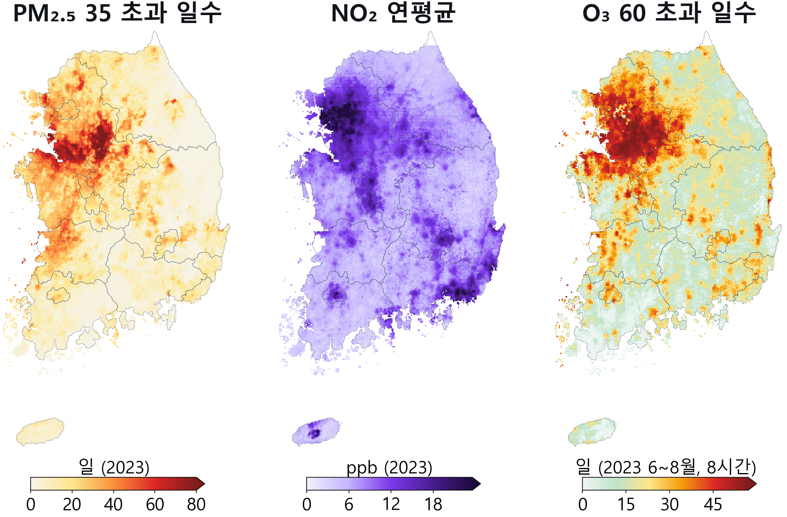
AMR-HGN 추론 · 2023 — PM₂.₅ 일평균이 환경기준 35 µg/m³ 를 넘은 날수 · NO₂ 연평균 · O₃ 6~8월 일 최고 8시간 평균이 60 ppb 를 넘은 날수 (1km 추론 · 0.015° 격자)
4기후변화 및 환경영향평가 적용
확장 제안 · 기후변화영향평가
미래 조건에서 폭염과 오존 고농도가 겹치는 곳을 찾는다
폭염 지역 × 오존 고농도 지역 → 복합 고위험가상 도시권
폭염 지역빈도 낮음 → 높음
오존 고농도빈도 낮음 → 높음
복합 고위험두 지역이 겹치는 곳
불확실성추가 검증 필요
개념 시각화 · 실제 폭염 · 오존 추론 결과나 특정 지역의 위험도 아님
| 구분 | 질문 | 필요한 입력 · 검증 |
|---|
| 현재 · 단기 | 지금과 며칠 뒤, 어디가 고농도인가 | 운영 예보 · 현재 관측, 예보 선행시간별 평가 |
| 장기 기후 | 미래 기후 조건에서 위험 분포가 어떻게 달라지나 | 기후 시나리오 · 미래 배출 · 복수 모델 · 외삽 검증 |
| 폭염 확장 | 국지적으로 더 뜨겁고 위험한 곳은 어디인가 | 기온 · 습도 · 바람 · 복사 · 도시 정보, 별도 목표변수 학습 |
| 복합 고위험 | 폭염과 오존 고농도가 함께 나타나는 곳은 어디인가 | 폭염 지역 × 오존 고농도 지역 중첩, 같은 날 함께 나타난 빈도 |
같은 신경망을 기온 · 일사량으로 넓혀 폭염 지역을 찾고, 이를 오존 고농도 지역과 겹쳐 복합 고위험 지역을 가려낸다.
목표는 미래의 특정 날을 맞히는 것이 아니라 고위험 지역의 빈도 · 지속성과 그 불확실성을 보이는 것이다.
4기후변화 및 환경영향평가 적용
활용 제안 · 전략환경영향평가
전략환경영향평가는 대안마다 지도를 만들어 고른다
전략환경영향평가입지 · 배출 시나리오별 대기오염지도
- 입지 분석 — 대기오염지도로 기존 고농도 지역 · 주거지와 겹치는지 먼저 본다
- 대안 비교 — 입지와 배출 시나리오마다 지도를 만들어 나란히 놓고 고른다
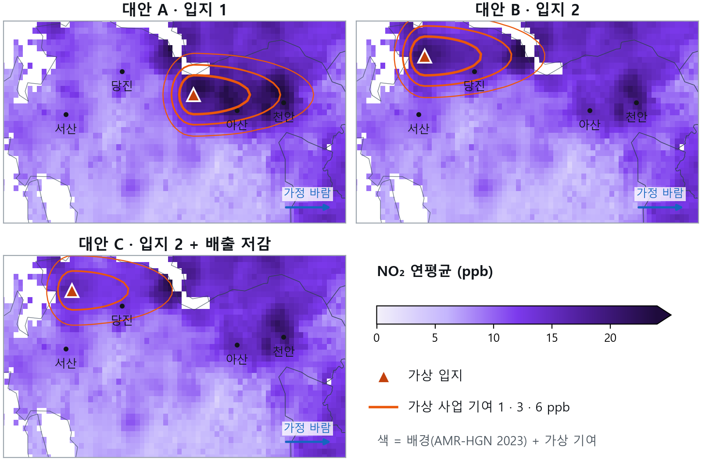
예시 — 배경 = AMR-HGN 2023 NO₂ 연평균 추론 · 주황선 = 가상 사업 기여(설명용) · 충남 북부
CMAQ 에뮬레이터목적마다 배우는 것이 다르다
- 1
실시간 재현개발 중
학습 자료전지구 CTM · 기상장
배출 · 지형(정적)
아키텍처U-Net · FNO
교사 = CMAQ-DA
추론지금 시각
5 km CMAQ 급 장
- 2
미래 예보확장 계획
학습 자료과거 CMAQ-DA 시계열
+ 기상 · 배출 · 지형
아키텍처자기회귀 시계열
Aurora · GenCast 식
추론며칠 뒤
CMAQ 급 장 + 앙상블
- 3
배출량 섭동전략환경영향평가 활용
학습 자료CMAQ 배출 섭동 런
배출 변화 · 기상 · 기준장
아키텍처조건부 U-Net
Δ농도 학습
추론대안별 Δ농도
시나리오 CMAQ 장
세 갈래 모두 CMAQ 를 교사로 배운다 — 배출 섭동은 따로 학습해야 한다. CMAQ 이 하는 일과 구현 흐름은 다음 두 장.
4기후변화 및 환경영향평가 적용
활용 제안 · CMAQ
CMAQ 이 하는 일 — 재현하고, 예보하고, 시나리오를 비교한다
1과거 농도장 재현지나간 매시간을 5 km 장으로
활용환경보건 — 노출평가환경영향평가 — 현황 · 영향예측
활용대기질 예보오존 예보황사 예보미세먼지 예보
3배출 시나리오별 농도장배출을 바꾸면 농도는 어떻게
NOx 배출 몫 · CAPSS 2021 전국
시나리오(가상) · 산업 · 에너지 30 % 감축
 배출 변화 Δ
배출 변화 Δ
CMAQ섭동 런
ΔC
대안별 농도 변화
대안 비교
활용환경영향평가 — 대안 비교대기오염 정책 시나리오 평가
자료 — CMAQ-DA PM₂.₅ 5 km · AirKorea 서울 도시대기 · CAPSS 2021. CMAQ-DA 는 측정소를 동화했다(독립 검증 아님). 2 의 예보 구간도 재분석 값, 3 의 시나리오 · Δ 는 가상.
4기후변화 및 환경영향평가 적용
활용 제안 · CMAQ 에뮬레이터
CMAQ 에뮬레이터 세 갈래 — 무엇을 배워 무엇을 내는가
1학습 자료
2아키텍처
3추론
핵심
1실시간 재현개발 중
 정답 CMAQ-DA
정답 CMAQ-DA수 분 만에 CMAQ 급 장
U-Net 2023 재현 R² 약 0.59 [개발]
FNO 의 CMAQ 증류는 계획 단계2미래 예보확장 계획


 과거 CMAQ-DA기상 예보CAPSS 배출지형
과거 CMAQ-DA기상 예보CAPSS 배출지형 정답 다음 시각
정답 다음 시각자기회귀 · Aurora · GenCast 식
3배출량 섭동전략환경영향평가 활용
학습한 섭동 폭 안에서만 쓴다
참고 DeepRSM(Xing 외 · 2020)
결과가 있는 것은 1 의 U-Net 뿐이다(개발 단계). FNO 의 CMAQ 증류와 2 · 3 은 계획 · 제안이며 결과가 없다. 학습 자료 층은 2023-03-11 14시 남한 5 km 실제 자료(Δ배출만 가상), 나머지 그림은 모식도.
4기후변화 및 환경영향평가 적용
검토 · 결정 지원 — 신뢰도와 불확실성
AI 산출장을 어디까지 믿어야 할까?
신뢰도 · 불확실성 · 한계를 함께 낸다
지금까지의 환경영향평가예측 농도 = 값 하나그 값이 얼마나 확실한지는 표현하지 않았다
→
AI 산출장값 + 신뢰도 + 범위 + 한계어디까지 읽어도 되는지를 지도와 함께 낸다
- 1신뢰도관측 없는 곳 · 다른 해로 검증한 성능을 함께 밝힌다
- 2불확실성칸마다 값 하나가 아니라 믿을 수 있는 범위로 낸다
- 3한계관측 공백 · 극값 · 학습 범위 밖 조건에서는 해석을 아낀다
검토자는 값이 얼마나 확실한지 보고 따져 묻고, 결정권자는 불확실성까지 알고 판단한다.
AI 산출장은 절대적 성능을 주장하지 않는다 — 의사결정의 보조 근거로 쓰임의 범위를 분명히 한다.
신뢰도·불확실성·한계 명시
아래 판 — 수도권 NO₂ 1km(AMR-HGN E2E 추론, 2023-03-13 10시 KST). 위 σ 판 · 분포는 개념도다.
4기후변화 및 환경영향평가 적용
활용 제안 · 사후환경영향조사
사후조사는 센서 × GNN 으로 실시간 지킨다
사후환경영향조사센서 × GNN 실시간 이상 감지
- 이상 감지 — 사업장 주변 센서 값이 GNN 예상 범위를 넘으면 현지 오염원 영향으로 판단한다
- 계절별 비교 — 과거 1년 사계절 모니터링과 AI 재현 농도장을 같은 시각끼리 비교한다
- 1예상주변 센서 · 기상 · 배경장으로 GNN 이 사업장 인근 센서(S★) 값의 범위를 낸다
- 2비교S★ 실측을 같은 시각의 예상 범위와 맞댄다
- 3판단범위 안이면 배경 변동, 범위를 넘으면 현지 오염원 영향으로 본다
개념 시각화 — 센서 값 · 예상 범위는 설명용이다
봄여름가을겨울
계절마다 현장 측정 기간 ↔ 같은 시각 AI 재현 1km 농도장
5
5 / 5
현업화 연구 제안
기초연구 → 실증연구 → 제도화 → 실무 활용
5현업화 연구 제안
기술 로드맵 — AMR-HGN 고도화 · FGNO 개발
완성된 AMR-HGN을 고도화하고, FGNO 연산자로 넓힌다
AMR-HGN기초연구 완성
공개 자료만으로 전국 1km × 8,760시간 추론과 다층 검증을 수행했다. 다음은 성능을 높이는 후속 연구다.
- 관측 밀도 적응형 하이브리드측정소 가까이는 잠재공간 융합, 먼 곳은 스케일 분해에 거리로 가중한다
- 비선형 화학수송모델 편향 보정분위수 사상 · 조건부 보정으로 선형 보정의 한계를 넘는다
- 불확실성 정량화 세분화토지피복 · 지역 · 시간대별로 예측구간을 교정한다
- 다년도 · 시간 확장다년도 학습으로 배출 정책 효과의 재현을 검증한다
- 위성 보조 감독GEMS · TROPOMI 칼럼으로 관측 없는 격자를 보완한다
- 예보 모드 확장공개 예보 입력으로 배경장 에뮬레이터를 실시간화한다
FGNO기초연구 단계
함수형 생성 신경 연산자 — 흩어진 관측을 연속된 장으로 펼치고, 장 전체가 바뀌는 규칙을 배운다
불규칙 관측GNO그래프 연산자 인코더연속 잠재장FNO 처리기GNO임의 좌표 디코더
- 결정론 전국 1km현재 — 관측소와 격자의 접점을 유지하며 전역 처리기를 견준다
- 확률화하나의 지도 대신 공간적으로 일관된 여러 농도장을 만든다 · 분포 점수로 학습 · 평가
- 동아시아 광역 확장25 → 5 → 1 km 다중규모로 광역 맥락을 잇는다 (계획)
최신 연산자 연구 흐름 — 참고
FNO 2021 · GINO 2023 · FGN 2025 · 다중규모 확률 손실 2025 · GSNO · HiLNO · GA-AMNO 2026
대기질 적용 성능의 증거가 아니라 설계 방향의 참고다
5현업화 연구 제안
공개자료 기반 평가용 AI, 현업화 실증 연구
가칭 — 공개 지구환경자료 기반 고해상도 기후 · 대기환경장 재구성 및 시공간 정합형 영향평가 실증
실증으로 답할 세 질문
1대표성제한된 현황조사와 공개자료를 결합하면 사업지의 연중 현황을 얼마나 더 잘 설명하는가
2운용성고해상도 자료동화장 없이 어떤 정확도 · 지연 · 비용을 달성하는가
3평가 적합성시공간 정합형 결합은 어떤 물질 · 사업 · 기상 조건에서 타당하고, 언제 기존 방식이 필요한가
| 연구 묶음 | 검증할 질문 | 산출물 |
|---|
| 1데이터 · 대표성 | 조사 표본과 국가 관측 · 모델 자료를 어떻게 결합하나 | 시공간 정합 자료 규격 · 재표집 벤치마크 |
| 2배경 · 다중규모 AI | 공개 입력에서 배경 · 국지 정보를 얼마나 회수하나 | CMAQ 에뮬레이터 · AMR-HGN / 연산자 통제 비교 |
| 3확률 · 검증 | 관측 공백과 극값의 불확실성을 제대로 표현하나 | 공간 · 연도 차단 시험 · 조건별 교정 |
| 4평가 실증 | 시간별 정합 방식은 언제 유효하고 언제 실패하나 | 기존 방식과 같은 조건의 사업지 비교 |
| 5운용 · 확장 | 저비용 추론 · 예보 · 폭염 확장이 가능한가 | 추론 패키지 · 지연 · 비용 시험 · 폭염 시범모델 |
추진 단계
(안)
- 1기초연구공개자료 AI · 검증 체계
연구 묶음 1~3
- 2실증연구기존 방식과 사업지 비교
연구 묶음 4
- 3제도화평가 제도 · 자료 규격
반영 검토
- 4실무 활용추론 패키지 · 예보 · 폭염
연구 묶음 5
5현업화 연구 제안
성공 요인 — 자료 · 도메인 · 설계 · 협업
꿈꾸기 어려웠던 평가를 인공지능으로지금의 제안은 고해상도 농도장 기술의 응용 예시일 뿐이다 — 더 많은 평가 분야를 더 과학적으로 바꾸려면 기초연구부터 현업화 연구까지 이어져야 한다
셋 중 하나라도 비면 성능이 서지 않는다 — 셋이 맞물리는 곳이 성능이다
현업화는 협업이다분야별 전문가가 한 흐름으로
- 자료 처리수집 · 정합 · 품질관리
- 도메인 설계물리 · 화학 · 평가 기준
- 아키텍처모델 구조 · 학습
- 검증 · 적용평가 실무 · 제도
함께 갖춰야 할 성공 요인대기환경 딥러닝에서 성능만큼 중요한 것
- 관측 없는 곳 · 다른 해 검증학습에 없던 지역 · 연도에서 맞아야 평가에 쓴다
- 불확실성 정량화값 하나가 아니라 믿을 수 있는 범위로 낸다
- 물리 · 화학 일관성통계 지표만이 아니라 과학 법칙과 맞는지 본다
- 재현 · 운영 체계자료 · 모델 버전 관리와 지속 갱신
- 설명 · 제도 수용성평가 지침 · 표준으로 받아들여질 근거
AI 기반 기후·대기환경평가 — 시공간 정합형 영향평가
감사합니다.
- 1관측과 환경장을 연결하고
- 2같은 시공간에서 영향을 평가하며
- 3기후 고위험 지역 식별로 넓힌다
(주)건화 환경평가부 정필수 상무
🗣 나레이션100
♪ 배경음25